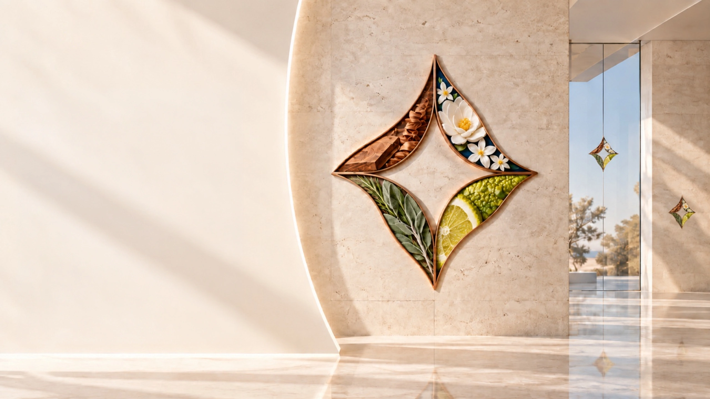
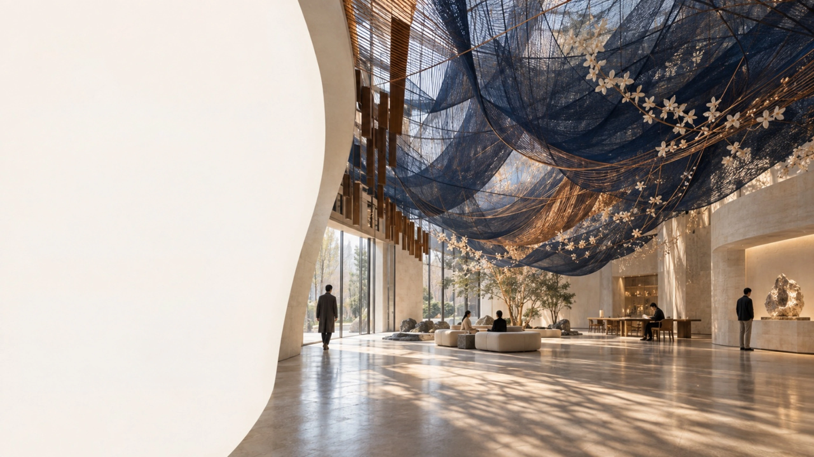
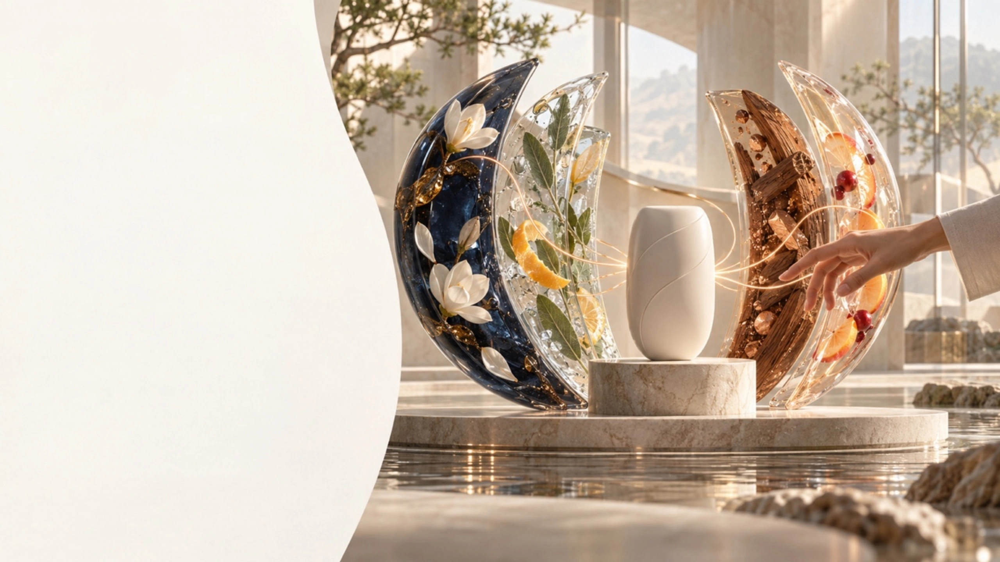
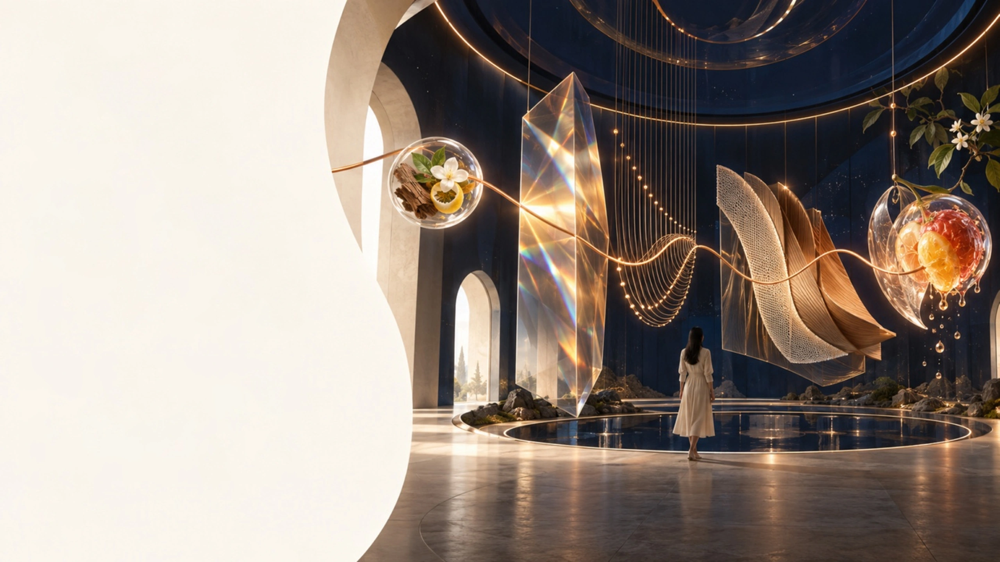
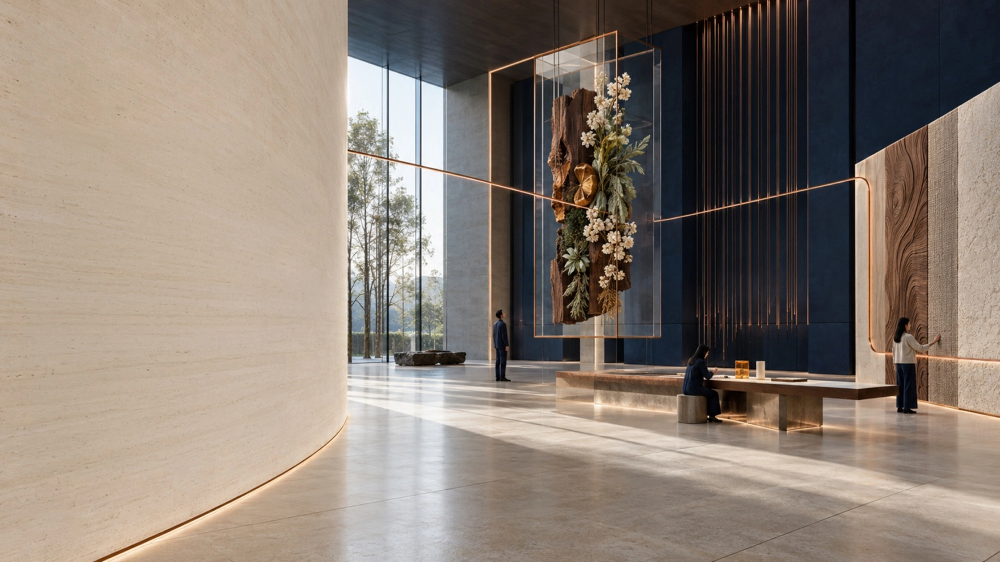

Scent creates
emotion.
Fragrance influences how people feel
in an instant.
It can calm, comfort, uplift, or energize—shaping the emotional tone of an experience before a decision is made.
- CALM
- COMFORT
- UPLIFT
- FRESHNESS
- ENERGY
Scent stays
in memory.
Smell is one of the strongest
triggers of memory.
A consistent scent helps experiences feel more memorable, distinctive, and emotionally anchored over time.
- ENCOUNTER
- ASSOCIATION
- RECALL
- RETURN
A moment becomes an association.
The association returns as memory—and brings people back.

Scent can become
a signature.
A recognizable scent can become
part of how a brand is remembered.
When used consistently, scent strengthens identity across customer moments and makes the brand feel more distinctive.
- RECOGNITION
- DIFFERENTIATION
- CONSISTENCY
- RECALL
Recognition becomes distinction.
Consistency turns that distinction into lasting recall.

Scent elevates
space experience.
In physical environments, scent shapes
comfort, dwell time, and perceived quality.
Across retail, hospitality, workplace, and showroom settings, scent enriches atmosphere and improves how people use a space.
- RETAIL
- HOSPITALITY
- WORKPLACE
- SHOWROOM
People explore longer, settle more comfortably,
work with focus, and perceive greater value.

Scent enhances
product experience.
In products, fragrance and flavor shape
expectation, desirability, and perceived value.
From personal care to food, beverage, and oral care, sensory cues influence how products are understood and enjoyed.
- PERSONAL CARE
- HOME CARE
- ORAL CARE
- FOOD & BEVERAGE
Scent suggests identity and freshness.
Flavor builds anticipation and completes enjoyment.

One sense
can awaken
the others.
Scent can begin an experience that light, sound,
texture, and taste continue.
When sensory cues respond to one another, a single impression grows into a richer, more coherent experience.
- SCENT
- LIGHT
- SOUND
- TEXTURE
- TASTE
A scent is rarely experienced alone.
It becomes more powerful when the senses answer together.

From scent to
total experience.
The strongest experiences happen when
every sensory cue tells the same story.
Scent may be where many projects begin. Its impact becomes greater when the full experience feels coherent, intentional, and meaningful.
- SCENT CUE
- ATMOSPHERE
- HUMAN RESPONSE
- COHERENT EXPERIENCE
This is where scent begins to shape
the total experience.